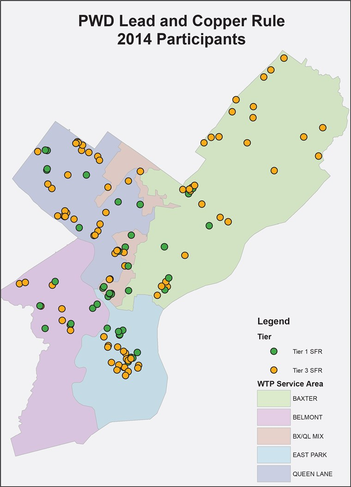
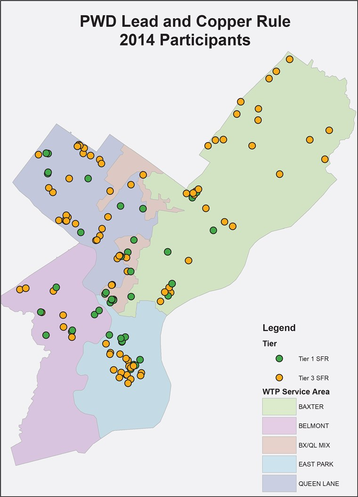

Customers are responsible for all home plumbing, and the Philadelphia Water Department cannot control what plumbing materials are used beyond the City’s water main. Homes built before 1950 may have a service line, the pipe connecting home plumbing to the water main in the street, made from lead. Copper pipes inside homes may also be joined by solder containing lead, and older brass pipes, faucets, fittings and valves may have some lead.
While the Philadelphia Water Department treats water to make it safer for homes with lead plumbing, there is always a risk of lead getting into water when you have lead in your plumbing.
It is important for customers to check their home for lead plumbing and take steps to ensure safe water if lead is discovered. Whether your home has lead plumbing or not, there are some simple steps you can take to make sure you’re getting the cleanest, freshest water possible.